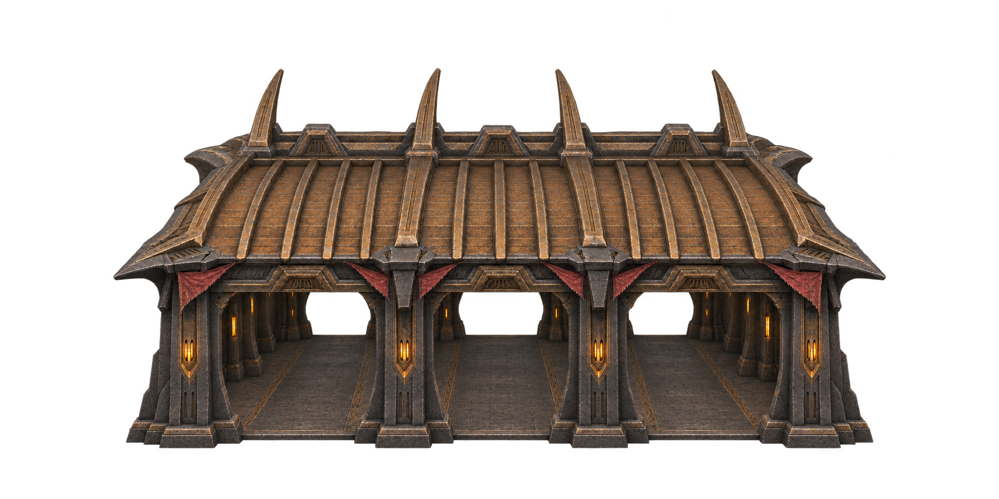

HWM162-S01 · Marché
Halle d’échanges du clan
Abriter les échanges et les ateliers de passage dans une halle à pleine échelle.
- Source
- 1774 × 887 px
- Lore
- Adaptation originale
- Passe
- 1
- Vue
- Cible orthographique 0°/35° ; angle non mesuré
- Cible
- target-v81-59-97
Entrée et sortie dégagées. Les comptoirs restent indépendants du bâtiment.
Télécharger ce PNG